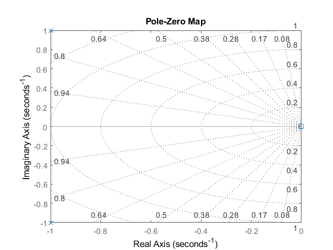

Contents
Transfer function: s^2/(s^2+2*s+2)
clc;clear; syms s G=@(s) s^2/(s^2+2*s+2); disp('Transfer function:') disp(G(s))
Transfer function: s^2/(s^2 + 2*s + 2)
DC gain
Transfer eqn: s^2/(s^2+2*s+2)
clc;clear; syms s G=@(s) s^2/(s^2+2*s+2); DC_gain=limit(G(s),s,0); fprintf('DC gain: %f\n',DC_gain)
DC gain: 0.000000
Intial value problem
Transfer eqn: s^2/(s^2+2*s+2)
clc;clear; syms s G=@(s) s^2/(s^2+2*s+2); Initial_val=limit(s*G(s),s,Inf); fprintf('Inital value: %.3f\n',Initial_val);
Inital value: Inf
Final value problem
Transfer function: s^2/(s^2+2*s+2)
clc;clear; syms s G=@(s) s^2/(s^2+2*s+2); Final_val=limit(s*G(s),s,0); fprintf('Final value: %.3f\n',Final_val);
Final value: 0.000
Poles/zeros
Transfer function: s^2/(s^2+2*s+2);
clc;clear; G=tf([1 0 0],[1 2 2]); disp('Transfer function:') G poles=pole(G) zeros=zero(G) % Pole-zero map pzmap(G) grid on
Transfer function:
G =
s^2
-------------
s^2 + 2 s + 2
Continuous-time transfer function.
poles =
-1.0000 + 1.0000i
-1.0000 - 1.0000i
zeros =
0
0
